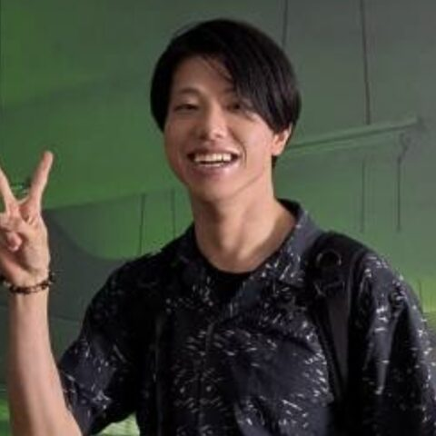

Naoya Yoshikuwa
University of Tokyo · Japan
Drug efficacy prediction for cancer using ML until 2024; now a master's student in the Goto lab at DBCLS researching AI agents (LLM) for rare disease.
Topics: LLM/AI, Rare disease, Machine learning
Codes in: Python